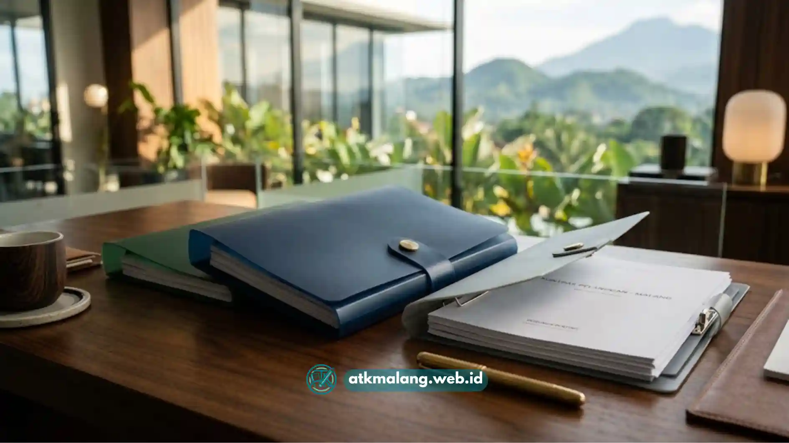

Bagi tim customer service, admin front office, atau bagian pelayanan publik, berkas pelanggan adalah aset yang harus selalu dalam kondisi rapi dan mudah diakses.
Sayangnya, banyak kantor masih mengandalkan map folder plastik malang kualitas rendah yang justru menambah masalah baru.
Mulai dari lipatan yang pecah setelah beberapa kali dibuka, kancing pengunci yang copot, atau ukuran map yang tidak pas sehingga berkas penting mudah tergelincir keluar saat dibawa.
Padahal, di era pelayanan pelanggan yang menuntut kecepatan dan profesionalisme, kondisi map folder yang sudah rusak bisa memberi kesan kurang rapi di mata klien atau tamu kantor.
Pastikan pengadaan Alat Tulis Kantor Anda menggunakan standar kualitas terbaik.
Daftar Isi
Solusi Penyimpanan Berkas Klien dengan Map Plastik Terbaik
Sebelum membahas lebih jauh, penting untuk memahami parameter dasar yang membedakan map folder plastik berkualitas dari yang mudah rusak di pasaran.
Memilih map folder plastik malang berkualitas untuk berkas pelanggan mewajibkan Anda memastikan beberapa kriteria khusus, demi keamanan arsip jangka panjang.
Seperti bahan polypropylene lentur tahan sobek, kancing snap lock presisi anti-copot, transparansi berkas yang jernih, serta ketersediaan varian warna fungsional.
Empat parameter tersebut menjadi dasar penilaian tim admin profesional kami setiap kali menyeleksi Alat Tulis Kantor yang layak direkomendasikan kepada klien korporat.
Mengapa Bahan Polypropylene Menjadi Standar Utama
Map folder plastik berbahan polypropylene (PP) memiliki karakteristik lentur namun kuat, sangat cocok digunakan untuk menyimpan berbagai berkas penting.
Berbeda dengan plastik PVC tipis yang cenderung getas dan mudah retak di bagian lipatan tengah setelah beberapa bulan pemakaian aktif.
Saat map dibuka-tutup berulang kali dalam sehari misalnya untuk menyisipkan dokumen baru bahan PP tetap mempertahankan bentuknya tanpa retak.

Map plastik polypropylene menjamin keawetan berkas dalam jangka panjang.Kancing Snap Lock, Detail Kecil yang Berdampak Besar
Kancing pengunci yang longgar adalah penyebab utama berkas pelanggan tercecer saat dibawa dari satu meja ke meja lain dalam kantor.
Map folder plastik dengan sistem snap lock presisi memberikan cengkeraman yang pas, tidak terlalu keras hingga sulit dibuka, namun juga tidak terlalu longgar.
Hal ini mencegah map terbuka sendiri saat diletakkan miring di rak. Ini adalah fitur yang harus diperhatikan dalam pemilihan perlengkapan kearsipan Anda.
Menyeleksi Map Folder Plastik Berkualitas
Beberapa aspek yang kami perhatikan saat mengkurasi map folder meliputi ketebalan material, ketahanan lingkungan, dan kekuatan pengunci:
- Ketebalan material minimal 0,18 mm: Cukup tebal untuk menahan tekanan tumpukan berkas namun tetap fleksibel saat dilipat berulang kali.
- Ramah lingkungan dan tahan air: Bahan polypropylene tidak mudah rusak akibat tumpahan air atau kelembapan ruangan ber-AC yang berembun.
- Uji tekan kancing pengunci puluhan kali: Di showroom ATK Malang, memastikan sistem penguncian tetap presisi untuk rutinitas padat.
Proses seleksi ini memastikan setiap unit produk yang kami distribusikan siap menemani operasional harian tim customer service, klinik, kantor notaris, hingga instansi pelayanan publik.
Perbandingan Jenis Map Folder Plastik Fungsional
Berikut perbandingan empat jenis map plastik yang paling umum digunakan untuk menyimpan berkas pelanggan di lingkungan perkantoran:
| Jenis Map Plastik | Ketebalan Material | Fungsionalitas (Kapasitas Lembar) | Fleksibilitas Warna | Kategori Harga |
|---|---|---|---|---|
| Map Kancing 1 Plastik | ± 0,18–0,20 mm PP | ± 50–70 lembar | Tersedia 6–10 varian warna | Ekonomis, cocok volume besar |
| Map Kancing 2 Plastik | ± 0,20–0,25 mm PP | ± 80–100 lembar | Tersedia 6–10 varian warna | Menengah, untuk berkas tebal |
| Map L Transparan | ± 0,15 mm PP bening | ± 20–30 lembar | Bening/transparan penuh | Terjangkau, untuk berkas ringkas |
| Map Snelhecker Plastik | ± 0,25–0,30 mm PP | ± 100–120 lbr (penjepit besi) | Tersedia beberapa varian warna | Sedikit lebih tinggi, arsip semi-permanen |
Untuk kebutuhan penyimpanan berkas pelanggan yang sering diakses dan dipindah-pindah, Map Kancing 2 Plastik dan Map Snelhecker Plastik cenderung lebih tahan lama.
Sementara Map L Transparan lebih cocok digunakan untuk dokumen ringkas, pengiriman proposal pendek, atau berkas yang sifatnya sementara saja.
Ide Penataan Berkas Pelanggan Menggunakan Map Folder Plastik
Selain memilih jenis map yang tepat, sistem kode warna dapat membantu tim front office bekerja lebih cepat dan efisien. Berikut inspirasinya:
- Gunakan warna merah untuk berkas prioritas aktif, warna biru untuk berkas selesai, dan warna kuning untuk berkas tunggu.
- Tempelkan label nama pelanggan pada bagian depan map agar mudah dicari tanpa harus membuka map satu per satu.
- Simpan map dalam posisi berdiri di rak filing cabinet untuk menghindari tekanan berlebih pada kancing pengunci.
- Gunakan kode warna per bulan untuk memisahkan arsip lama dan aktif jika kantor memiliki volume pelanggan tinggi.
Kantor Anda dapat menjelajahi lebih banyak pilihan map folder plastik melalui katalog Alat Tulis Kantor kami yang lengkap dan fleksibel.
Map folder plastik berkualitas bukan sekadar alat penyimpanan, melainkan bagian dari standar profesionalisme layanan di kantor Anda.
Dengan memilih bahan tebal, snap lock presisi, dan kode warna yang konsisten, tim front office dapat bekerja maksimal tanpa khawatir berkas rusak atau tercecer.